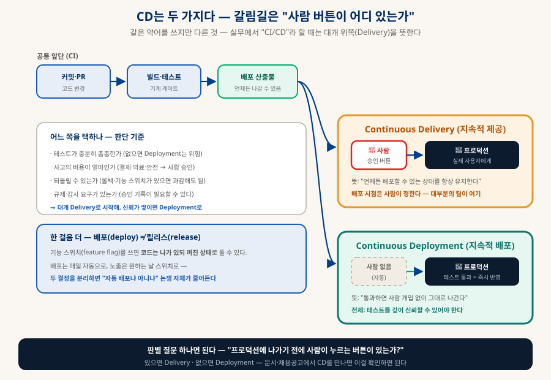
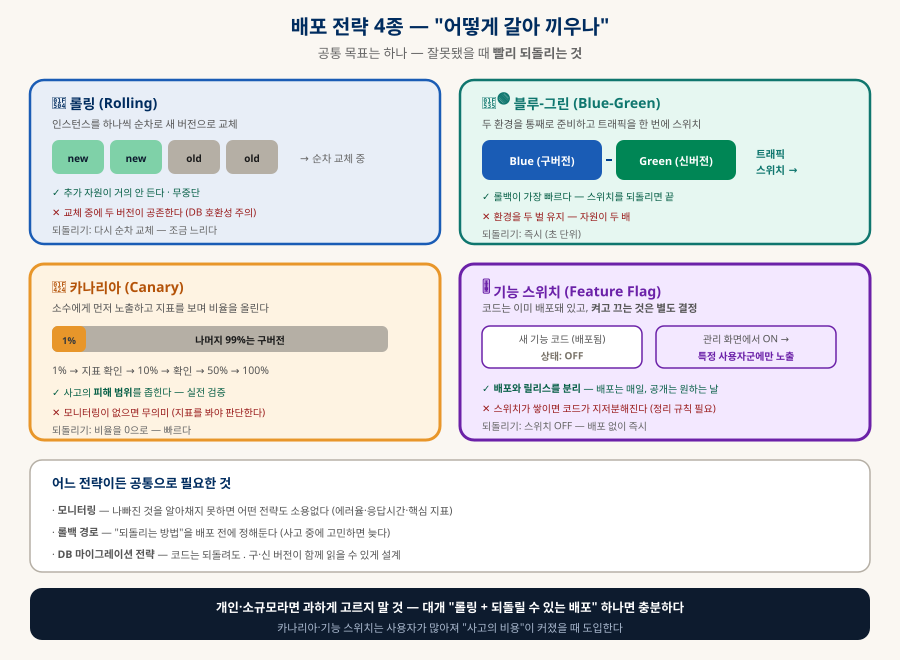
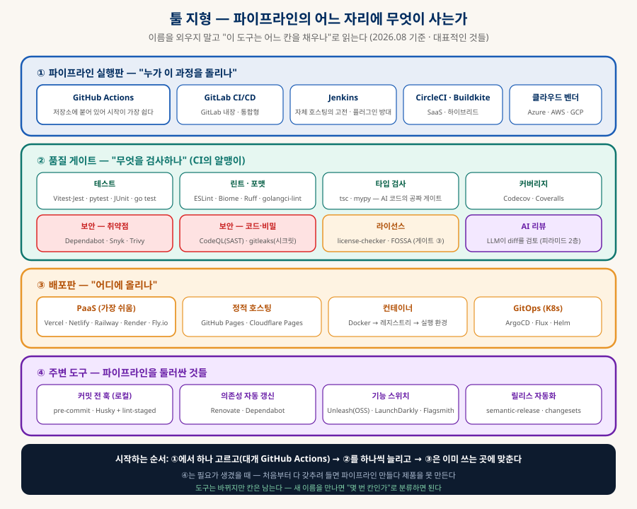

CI/CD 정리
약어 해체부터 툴 지형까지 — 기계가 지키는 개발 흐름
CI는 하나인데 CD는 두 뜻, CT는 세 뜻이라 이름부터 혼란스럽다. 약어를 먼저 해체하고, 파이프라인이 실제로 무엇을 검사하는지, 배포를 어떻게 갈아 끼우는지, 그리고 어떤 도구가 어느 칸에 사는지까지 — 개인 프로젝트에서 팀 운영까지 쓸 수 있는 지도로 정리한다.
0. 한눈에 보기 — 약어부터 해체한다
혼란의 원인은 개념이 아니라 겹치는 약어다
| 약어 | 풀네임 | 한 줄 뜻 |
|---|---|---|
| CI | Continuous Integration 지속적 통합 | 코드를 자주 합치고, 합칠 때마다 기계가 검사한다 — 뜻이 하나뿐이라 헷갈릴 일이 없다 |
| CD ① | Continuous Delivery 지속적 제공 | 언제든 배포할 수 있는 상태를 유지 — 배포 버튼은 사람이 누른다 |
| CD ② | Continuous Deployment 지속적 배포 | 통과하면 사람 없이 프로덕션까지 자동 |
| CT ① | Continuous Testing | 파이프라인 전 단계에 테스트를 심는다 (일반 DevOps 맥락) |
| CT ② | Continuous Training | 새 데이터로 모델을 자동 재학습 (MLOps 맥락) |
| CT ③ | Integration + Testing | 임베디드·하드웨어 분야에서 "배포(D)"가 성립하지 않아 테스트에 무게를 둔 표현 |
CT를 만나면: 도메인을 본다 → ML·AI면 Training, 그 외에는 대개 Testing. 「개발 생태계 해부」에서 다룬 "이름의 다의성"이 여기서도 혼란의 주범이다.
1. 왜 생겼나 — 두 가지 지옥
CI와 CD는 각각 다른 고통에서 태어났다
😱 통합 지옥 → CI가 답
각자 몇 주씩 따로 개발하다 마지막에 합치면, 충돌이 산더미로 터지고 "누구 코드 때문인지" 아무도 모른다. CI의 처방: 하루에 여러 번 합치고, 합칠 때마다 자동 검사. 문제를 작을 때·바로·원인이 분명할 때 잡는다.
😰 배포 공포 → CD가 답
배포가 손으로 하는 큰 행사라면, 무섭고 → 미루게 되고 → 한 번에 많이 나가고 → 더 무서워진다. CD의 처방: 배포를 자동화해 작고 잦게. 역설적으로 자주 배포할수록 배포가 안전해진다(변경량이 작으니 원인 추적과 롤백이 쉽다).
2. CI — 파이프라인은 실제로 무엇을 하나
커밋 하나가 관문들을 지나가는 과정
| 단계 | 하는 일 | 여기서 걸리는 것 |
|---|---|---|
| 방아쇠 (trigger) | push·PR 생성·일정(cron)·수동 실행 | — |
| 빌드 | 컴파일·번들·컨테이너 이미지 생성 | 문법 오류, 의존성 설치 실패, 타입 오류 |
| 테스트·정적 검사 ★ | 단위·통합·E2E 테스트, 린트, 포맷, 타입 검사 | 대부분의 문제가 여기서 — 회귀 버그, 스타일 위반 |
| 보안·라이선스 | 취약점 스캔, 시크릿 탐지, 라이선스 검사 | 노출된 API 키, 위험 의존성, GPL 유입(「오픈소스 라이선스」 게이트 ③) |
| 아티팩트 생성 | 배포 가능한 산출물을 저장·태깅 | — |
| 스테이징 배포 | 실제와 비슷한 환경에 먼저 올려 확인 | 환경 차이로만 드러나는 문제(설정·권한·데이터) |
3. CD — 같은 약어, 다른 두 가지
갈림길은 "사람 버튼이 어디 있는가" 하나뿐이다

| 기준 | Delivery가 맞는 경우 | Deployment가 맞는 경우 |
|---|---|---|
| 테스트 신뢰도 | 아직 촘촘하지 않다 | 테스트가 실패를 실제로 잡아준다는 확신이 있다 |
| 사고 비용 | 결제·의료·안전 — 잘못되면 크다 | 되돌리면 그만인 영역 |
| 롤백 능력 | 되돌리기가 느리거나 어렵다 | 즉시 롤백·기능 스위치가 준비돼 있다 |
| 규제·감사 | 승인 기록이 필요하다 | 해당 없음 |
4. CT — 세 가지 뜻과 각각의 맥락
어느 동네에서 들었느냐로 갈린다
| CT | 어디서 쓰나 | 내용 |
|---|---|---|
| Continuous Testing | 일반 DevOps | 테스트를 마지막에 QA가 몰아서 하지 않고 파이프라인 전 구간에 배치. 사실상 성숙한 CI의 다른 이름이라 별도로 안 부르는 팀도 많다 |
| Continuous Training | MLOps | 일반 SW는 코드만 변하지만 ML은 코드+데이터+모델이 변한다 → 데이터가 바뀌거나 성능이 떨어지면 자동 재학습·재평가하는 루프 |
| CI/CT로 병기 | 임베디드·하드웨어 | 소프트웨어가 하드웨어에 붙어야 검증되고 "배포"가 웹처럼 성립하지 않으므로, 자동화의 무게를 테스트 쪽에 둔 표현 |
5. 배포 전략 4종 — 어떻게 갈아 끼우나
공통 목표는 하나 — 잘못됐을 때 빨리 되돌리는 것

| 전략 | 방식 | 되돌리는 속도 · 대가 |
|---|---|---|
| 롤링 | 인스턴스를 순차 교체 | 보통 · 추가 자원 거의 없음. 단 교체 중 두 버전이 공존한다 |
| 블루-그린 | 두 환경을 준비하고 트래픽을 한 번에 전환 | 가장 빠름(스위치 되돌리면 끝) · 자원 두 배 |
| 카나리아 | 1% → 10% → 100%로 점진 노출 | 빠름 · 모니터링이 없으면 무의미(지표를 봐야 판단한다) |
| 기능 스위치 | 코드는 배포하되 꺼둔 상태로, 스위치로 노출 | 즉시(배포 없이 OFF) · 스위치가 쌓이면 코드가 지저분해짐 |
6. 툴 지형 — 어느 칸에 무엇이 사는가
이름을 외우지 말고 "이 도구는 어느 칸을 채우나"로 읽는다

A① 파이프라인 실행판 — 무엇으로 돌리나
| 도구 | 성격 | 고르는 기준 |
|---|---|---|
| GitHub Actions | 저장소 내장 · YAML | GitHub를 쓴다면 기본값 — 설정 파일 하나로 시작, 재사용 액션 생태계가 크다 |
| GitLab CI/CD | GitLab 내장 | GitLab을 쓴다면 자연스러운 선택 — 저장소·이슈·CI가 한 곳 |
| Jenkins | 자체 호스팅 고전 | 사내 인프라·특수 요구(폐쇄망, 하드웨어 연결)가 있을 때. 유연하지만 관리 부담이 크다 |
| CircleCI · Buildkite | SaaS · 하이브리드 | 속도·병렬성이 중요하거나, 실행은 자체 인프라에서 하고 싶을 때(Buildkite) |
| 클라우드 벤더 | Azure Pipelines · AWS · GCP | 이미 그 클라우드에 깊이 들어가 있을 때 — 권한·배포가 매끄럽다 |
B② 품질 게이트 — 무엇을 검사하나 (CI의 알맹이)
| 종류 | 대표 도구 | 왜 넣나 |
|---|---|---|
| 테스트 | Vitest·Jest(JS) · pytest(Python) · JUnit(Java) · go test · cargo test | 회귀 방지 — 파이프라인의 중심 |
| 린트·포맷 | ESLint·Biome(JS) · Ruff(Python) · golangci-lint | 스타일 논쟁을 기계에 위임 — 리뷰가 본질에 집중된다 |
| 타입 검사 | tsc(TS) · mypy(Python) | AI 코드의 공짜 게이트 — "없는 속성 호출"류를 사람 전에 잡는다 |
| 보안 — 의존성 | Dependabot · Snyk · Trivy | 알려진 취약점이 있는 패키지 차단 |
| 보안 — 코드·비밀 | CodeQL 등 SAST · gitleaks | 커밋에 섞인 API 키·토큰 탐지 (사고 나면 치명적) |
| 라이선스 | license-checker · FOSSA | GPL·AGPL 유입 차단 — 「오픈소스 라이선스」 게이트 ③의 자동화 |
| 커버리지 | Codecov · Coveralls | 테스트가 실제로 코드를 훑는지 — 단 숫자 자체가 목표가 되면 왜곡된다 |
| AI 리뷰 | LLM 기반 PR 리뷰 봇 | 사람 리뷰의 전처리 — 리뷰 피라미드 2층 |
C③ 배포판 · ④ 주변 도구
| 칸 | 도구 | 메모 |
|---|---|---|
| PaaS 배포 | Vercel · Netlify · Railway · Render · Fly.io | 가장 쉬운 길 — 대부분 자체 CI/CD가 내장돼 있어 별도 파이프라인 없이도 push 배포가 된다 |
| 정적 호스팅 | GitHub Pages · Cloudflare Pages | 이 지식 베이스가 쓰는 방식 — 빌드 없이 파일이 곧 서비스 |
| 컨테이너 | Docker → 레지스트리 → 실행 환경 | "내 컴퓨터에선 되는데"를 없애는 표준 — 「로컬 LLM 코딩 공장」의 샌드박스와 같은 기술 |
| GitOps (쿠버네티스) | ArgoCD · Flux · Helm | Git 저장소의 선언을 실제 상태와 계속 일치시키는 방식 — 규모가 커졌을 때 |
| 커밋 전 훅 | pre-commit · Husky + lint-staged | CI 이전에 내 컴퓨터에서 먼저 잡기 — 파이프라인 대기 시간을 아낀다 |
| 의존성 자동 갱신 | Renovate · Dependabot | 업데이트 PR을 자동 생성 — CI가 통과하면 안전하게 병합 |
| 기능 스위치 | Unleash(오픈소스) · LaunchDarkly · Flagsmith | 배포와 릴리스 분리(§5) |
| 릴리스 자동화 | semantic-release · changesets | 커밋 메시지에서 버전·체인지로그 자동 생성 |
7. 실전 — 이 지식 베이스에 CI를 붙인다면
추상적인 예제 대신, 실제로 필요한 검사를 자동화해 본다
이 저장소는 빌드가 없는 정적 사이트라 "배포 자동화"는 이미 되어 있다(push = GitHub Pages 반영 = 사실상 Continuous Deployment). 없는 것은 CI다 — CLAUDE.md에 적힌 로컬 검증 (docs.json 자산 실존 · SVG 유효성 · 태그 균형 · 꼬리 온전성 · 360px 오버플로)을 매번 손으로 조합해 돌리고 있다. 이걸 GitHub Actions로 굳히면 다른 PC에서 작업해도 같은 게이트가 걸린다:
name: verify on: [push, pull_request] jobs: check: runs-on: ubuntu-latest steps: - uses: actions/checkout@v4 - uses: actions/setup-python@v5 with: { python-version: '3.12' } - # ① docs.json이 참조하는 파일·SVG가 전부 실존하는가 - name: 자산 실존 검사 run: python3 scripts/check_assets.py - # ② SVG가 XML로 유효한가 (깨진 도식 조기 발견) - name: SVG 유효성 run: python3 scripts/check_svg.py - # ③ HTML 태그 균형 + 꼬리 온전성(Lightbox·scroll-spy·</html>) # ← 셸 복제 사고를 막는 게이트 - name: HTML 구조 검사 run: python3 scripts/check_html.py - # ④ 모바일 360px 가로 오버플로 (헤드리스 브라우저) - name: 모바일 렌더 검사 run: python3 scripts/check_mobile.py
8. 시작하는 순서와 안티패턴
한 번에 다 갖추려 들면 파이프라인 만들다 제품을 못 만든다
| 단계 | 넣는 것 | 얻는 것 |
|---|---|---|
| 1단계 | push 시 빌드 + 테스트만 | "깨진 코드가 main에 들어가지 않는다" — 여기까지가 가치의 절반 이상 |
| 2단계 | 린트·포맷·타입 검사 추가 | 리뷰에서 스타일 논쟁이 사라진다 |
| 3단계 | PR 병합 조건으로 걸기 (필수 통과) | 규칙이 합의가 아니라 구조가 된다 |
| 4단계 | 보안·라이선스 스캔 | 키 노출·GPL 유입 차단 |
| 5단계 | 스테이징 자동 배포 · 미리보기 환경 | PR마다 실제로 눌러볼 수 있는 링크 |
| 6단계 | 프로덕션 자동화 + 롤백·전략(§5) | 배포가 행사에서 일상으로 |
① 느린 파이프라인 방치 — 30분 걸리면 아무도 안 기다린다(캐시·병렬화로 10분 안쪽을 목표)
② 깨진 채로 두기 — main이 빨간 상태로 며칠 가면 경보가 소음이 되고, 아무도 안 본다
③ 불안정한 테스트(flaky) — 랜덤하게 실패하는 테스트 하나가 파이프라인 전체의 신뢰를 무너뜨린다
④ 커버리지 숫자를 목표로 — 의미 없는 테스트를 양산하게 된다(숫자는 지표이지 목표가 아니다)
⑤ 비밀을 YAML에 하드코딩 — 반드시 시크릿 저장소를 쓴다(공개 저장소면 즉시 유출)
⑥ 처음부터 쿠버네티스·GitOps — 개인·소규모엔 PaaS면 충분하다(「데이터베이스」 §9-E의 "처음부터 최고로" 착각과 같은 함정)
9. 함께 읽기
파이프라인의 각 칸을 깊이 다룬 문서들
| 주제 | 문서 |
|---|---|
| 기계 게이트가 왜 중요해졌나 | 「AI 시대의 개발 프로세스」 §4 — 리뷰 피라미드 1층이 곧 CI |
| 라이선스 검사를 CI에 거는 법 | 「오픈소스 라이선스와 바이브코딩」 §5 + rules/LICENSE-RULES.md |
| 배포 이후 — 모니터링·백업·롤백 | 「SaaS 해부」 §4-D |
| 앱은 왜 CD가 어려운가 (심사·구버전) | 「앱 출시의 관문」 §1·§3 |
| 타입 검사가 AI 코드의 게이트인 이유 | 「기술 스택 고르기」 §5-B · 「개발 생태계 해부」 §5-1 |
| MLOps의 CT — 모델 평가 설계 | 「LLM-as-a-Judge」 · 「AI 시대의 직무 지형」 §3 |
| 저장소 운영의 기본 | 「Git & GitHub 정리」 |